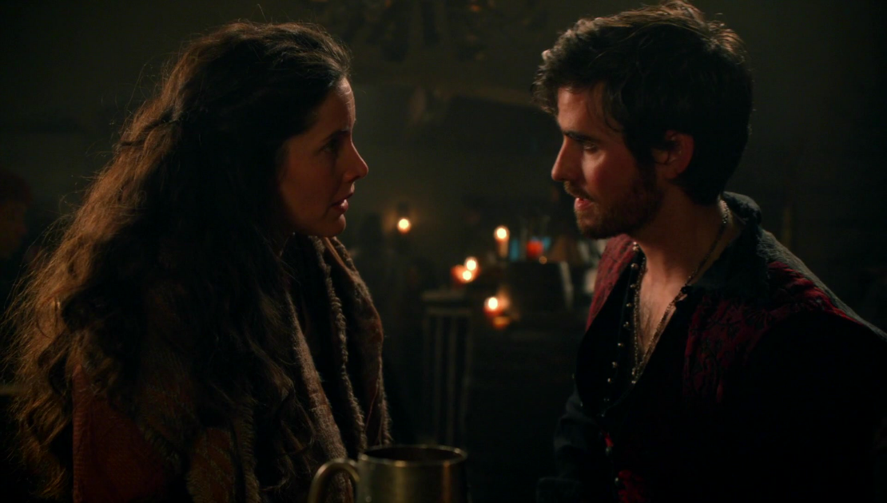

As I said before, He played Killian Jones,
앞에서 말했듯이, 콜린은 "킬리언 존스"를 연기했다.
Also known as "Captain Hook" in once upon a time,킬리언은 원어탐에서 "후크 선장"으로 알려져 있는데,
with a fancy Scottish accent
엄청 섹시한 아일랜드 발음과 함께잠만 내 심장
who falls in love with Emma Swan and becomes a better person for her.
엠마 스완과 사랑하며 더 좋은 사람이 된다!(두둥)
이렇게만 보면 참 유쾌한 인물이지만, 아무리 타인이 한때 악당이었던 자신을 용서했더라도 자기 자신 스스로는 절대 용서 못했고, 끝까지 죄책감을 안고 살아간 가슴아픈 사람이다. 특유의 위트있는 농담과 장난기는 그런 킬리언의 상처를 숨기려는 하나의 수단일지도 모른다. 그 죄책감 때문에 언제나 타인을 위해 거리낌없이 자신을 희생하고 내던지는 사람이 아닌지.
아아 중요한거는 킬리언이 약 300살이라는거다!!인간문화재
그리고 유머감각이 아아주 뛰어나다!물론 신문물을 모르는걸 놀리는게 대유잼
킬리언의 역사를 알아보자!
킬리언은 럼플스틸스킨이 인간이었을 시절 그의 아내(밀라)와 사랑에 빠졌다.
럼플스틸스킨이 아내를 돌려달라고 하자 칼을 던져주며 '아내를 데리고 가고 싶다면 칼로 싸우라'고 했으나
겁쟁이인 그는 결국 아내를 후크에게 빼앗긴다. 이놈이나 저놈이나...
졸지에 연인을 잃은 후크는 절망하고 럼플스틸스킨은 그에게 복수와 동시에 그가 가지고 있던 마법콩을 빼앗기 위해 그의 한쪽 손을 잘라낸다.
근데 정작 콩은 다른쪽 손에 있었다..
후크가 럼플스틸스킨을 '악어'라고 칭하는 이유는 마왕이 된 그의 피부가 파충류 같았기 때문. 해당영상
본래는 왕의 배에서 나라에 충성한 부함장.형인 리암은 함장으로 둘은 왕이 명령한 약초를 찾기 위해 네버랜드로 떠난다.
이때는 진짜 엄친아였음..
거기서 만난 피터팬이 그 약초는 드림셰이드이며 치명적인 독초라고 충고하지만 그의 형은 그 말을 신용하지 않고 스스로의 몸에 드림 셰이드를 시험해봤다가 죽을 위기에 처한다.
피터팬은 그를 살릴 수 있는 샘물을 알려주지만 대가를 치러야 한다고 경고했으며 존스는 자신의 형을 위해 샘물을 먹여 그를 살리나, 네버랜드를 떠나자 형은 죽음을 맞이한다.
(시즌 3초반에 샘물을 마시게 되면 결코 네버랜드를 떠날 수 없다고 밝혀졌지만 당시에 킬리언이 이 사실을 알 방법이 없었다.)
킬리언은 자신의 형이 죽음을 맞게 된 것은 전쟁야욕에 불타는 왕 때문이며 그를 위해서 일하지 않겠노라고 선언, 자신이 함장이 되고 배 이름을 '졸리 로저'라고 지으며 해적이 된다.
 킬리언과 리암의 슬픔을 담았다ㅜ
킬리언과 리암의 슬픔을 담았다ㅜ
시즌 2부터 등장해 갖은 고생과 굴욕을 당한다. (코라에게 이용당하고, 레지나에게도 이용당하고, 럼플에게 드림셰이드를 바른 갈고리을 꽂아 복수한 줄 알았는데 살아났고, 해적이 지 배를 뺏기고, 보스턴 지하실에 처박혀 있다가 마법을 파괴하러 왔다는 놈들에게 도로 스토리브룩으로 트럭에 실려 끌려오고, 이후 또 이용당한다(...)
원래의 싸움 실력은 차밍 못지 않게 출중한 것 같지만 작중의 여성 등장인물들에게 원 펀치로 실신해버리기를 반복하는 불운이 반복된다.
원래는 잘싸운다규ㅜ네버랜드에 간 시즌 3에서는 백설과 차밍, 엠마, 레지나와 함께 행동하며 가이드(?)를 맡는다.
엠마에게 호감을 느끼는 듯한데, 결국 비밀을 말해야만 길이 열리는 메아리 동굴에서 엠마한테 끌린다고 고백했다.
쎈 여자가 취향인 듯하다
처음에는 후크를 비열한 해적이라느니 하며 상당히 괄시하던 차밍과도 가까워진다. 시즌 4부터 공식 연인이 되었다.
시즌 5에 카멜롯에 떨어진 엠마 구하러 모두와 함께 가다가 엑스칼리버에 의해 죽을 위기에 처해져 엠마와 같이 마왕이 된다. 결국 마왕의 힘을 포기하게 되어 지하세계로 들어가지만
우여곡절 끝에 제우스에 의해 지하세계에서 탈출하여 엠마와 신혼집을 가꾸게 된다. 시즌 7 초반사이에 아기가 생김을 알려주고 파이널 에피소드에 같이 등장한다.